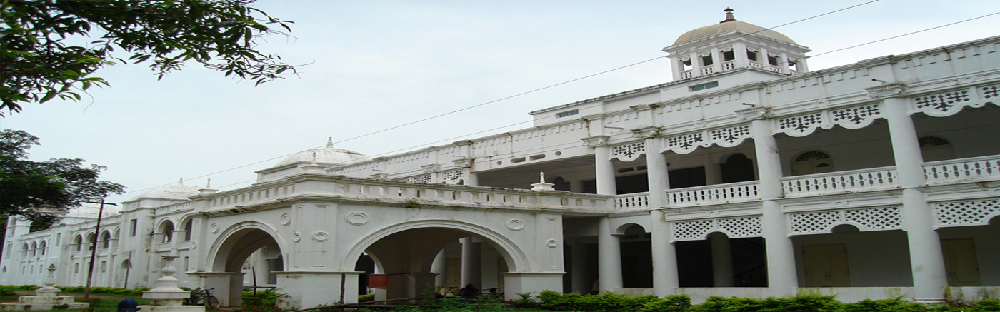

Gajapati District has been named after Maharaja Sri Krushna Chandra Gajapati Narayan Deo, the Ex–Raja Sahib of Paralakhemundi estate (the 1st Prime Minister of Odisha State), who is remembered for his contribution in formation of a separate Odisha province and inclusion of Paralakhemundi estate in Odisha. It got a District status on 2nd October 1992 after bifurcated from Ganjam District. It was Parlakhemundi sub-division in Ganjam and yet it is only sub-division in Gajapati. There are 7 Tahasils, 7 Blocks, 1,534 Villages, 149 Gram Panchayats and 11 Police stations.
Gajapati is a perfect place for the nature lovers, where one can visit attractive places with a Low budget. Here in this post, I have prepared a full list of tourist spots in Gajapati. Mainly people come here to gather more experience about the history of this place. Read this article from beginning to end to know about the best tourist spots in Gajapati district.